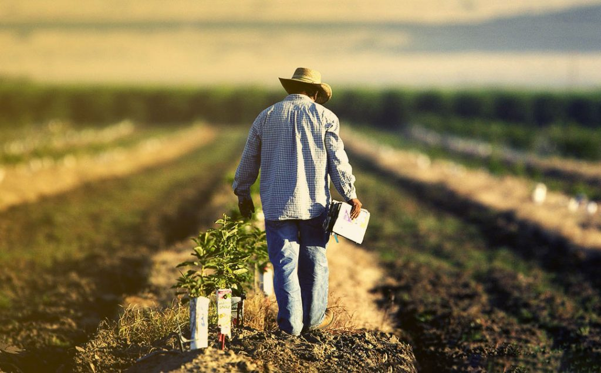

Sustentabilidade no Agronegócio
O agronegócio desempenha um papel crucial na sustentabilidade ambiental.

Educação Agrícola
Investir na educação agrícola é fundamental para o desenvolvimento do setor.
Inovação e Tecnologia
Tecnologias emergentes estão transformando o agronegócio.
- Integração de sensores IoT para monitoramento de culturas
- Desenvolvimento de aplicativos para gestão agrícola
- Utilização de drones para mapeamento de áreas agrícolas